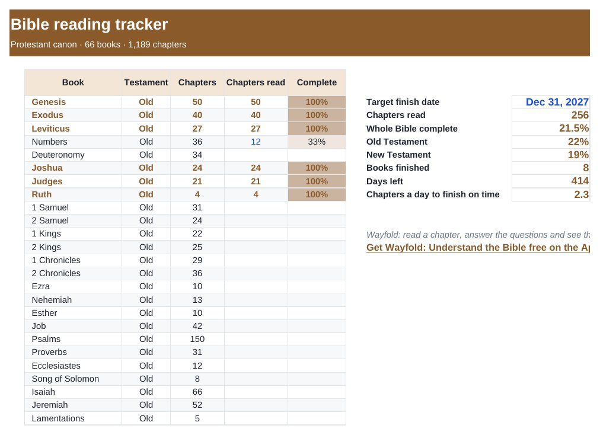

Home › Free Downloads › Excel
Free Excel downloadBible Reading Tracker: All 66 Books
Track every book and chapter, see your Old and New Testament progress, and know how many chapters a day gets you to your finish date.
⬇ Download the Excel file .xlsx · free · no sign-upWorks in Microsoft Excel, Google Sheets (File → Import) and Apple Numbers.

What’s inside
- All 66 books with chapter counts (1,189 chapters)
- Progress per book, per Testament and overall
- Target finish date with chapters-per-day pace
- Finished books highlighted
How to use it
- Set your target finish date.
- Type how many chapters of each book you have read.
- Read the pace number and keep going.

Wayfold: Understand the Bible
Wayfold: read a chapter, answer the questions and see the exact verse behind each answer.
Get it free on the App StoreQuestions
How many chapters are in the Bible?
1,189 in the 66-book Protestant canon: 929 in the Old Testament and 260 in the New.
How long does it take to read the whole Bible?
About 3.3 chapters a day finishes it in a year. The tracker works out your own pace from your date.
Which translation does it use?
Any. Chapter counts are the same across standard English translations.
More free downloads
Daily Water Intake Tracker 2027Shift & Pay Tracker with OvertimeJob Estimate & Invoice TemplateClient Appointment Booking LogSleep Log & Bedtime Routine TrackerScreen Time Tracker: What Your Phone Really CostsFamily Emergency Plan TemplateAfter-the-Argument Repair WorksheetThe 11 Human Body Systems: Free SlidesBooks of the Bible by Section: Free SlidesWhy Is the Sky Blue and Sunsets Red? Free Slides